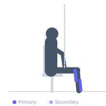
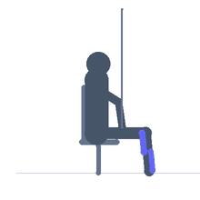

Exercise guide / Ankle Dorsiflexion — Band Traction Seated
Ankle Dorsiflexion — Band Traction Seated
A seated variation of the banded ankle dorsiflexion mobilization, performed with the ankle in a neutral position while the band provides posterior traction on the talus. The exerciser actively pumps the ankle through dorsiflexion and plantarflexion against the traction, which helps improve joint glide by reducing compression in the tibiotalar joint. This technique is based on joint mobilization principles and is used in ankle stiffness, ankle sprain rehabilitation, and before squatting sessions to improve dorsiflexion range.
Primary muscles
gastrocnemius medial
soleus
tibialis anterior
Secondary muscles
Equipment
Resistance Band (Loop / Mini Band)


Starting position
- Sit on the floor with one leg extended. Loop a stiff band around the front of the ankle, anchored to a fixed point directly behind the foot. The foot is in a neutral position with the band pulling horizontally (posteriorly).
Setup
- Anchor the band behind the ankle at floor level. The band should pull the talus backward as you dorsiflex.
Steps
- Step 1: Sit with the leg extended and the band creating posterior traction on the ankle.
- Step 2: Actively pump the ankle: dorsiflex (pull toes toward shin) then plantarflex (point toes) in continuous alternating motion.
- Step 3: Perform 20-30 pumps with the band providing continuous traction throughout.
- Step 4: Rest and repeat, or move to the wall version for weight-bearing loading.
Coaching cues
- Feel the band pulling the ankle backward as you pull the toes toward the shin — this is the joint glide happening
- Keep the pumps rhythmic and continuous — do not pause between dorsiflexion and plantarflexion
- The knee stays straight for gastrocnemius involvement; slightly bent for more soleus and joint-focused mobilization
Breathing
- Breathe continuously and rhythmically throughout the pumping motion.
Range of motion
- Full ankle dorsiflexion to full plantarflexion on each pump. The band traction is maintained throughout.
Tempo
- 1 pump per second. 20-30 pumps per set.
Common mistakes
- Using a band that is too light to provide meaningful traction
- Anchoring the band too high, creating a diagonal rather than horizontal pull
- Moving too slowly — the pumping motion should be continuous and rhythmic, not held
Safety
- The sensation should be of joint opening and mobilization, not pain
- If discomfort increases during the pumping motion, stop and assess with a physiotherapist
Training
- mobility: 20–30 reps
- mobility: 2–3 sets
- Rest: {'mobility': 30}